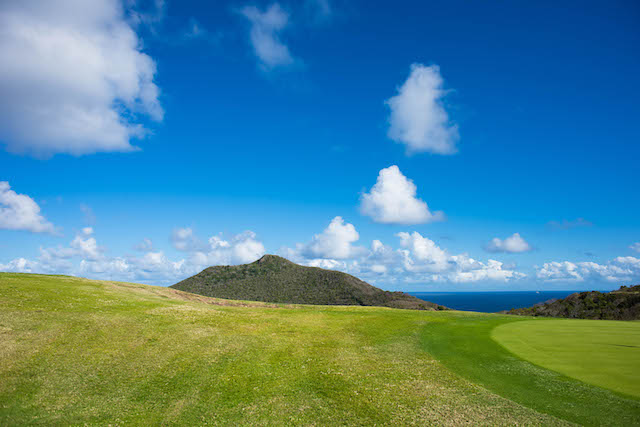
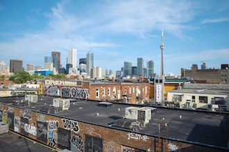
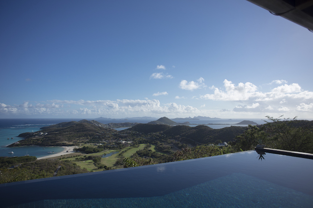
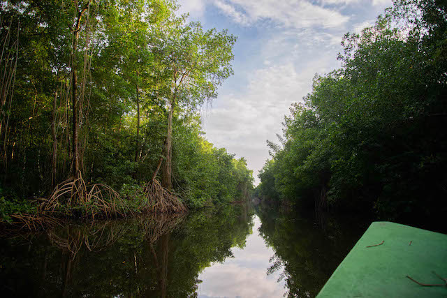
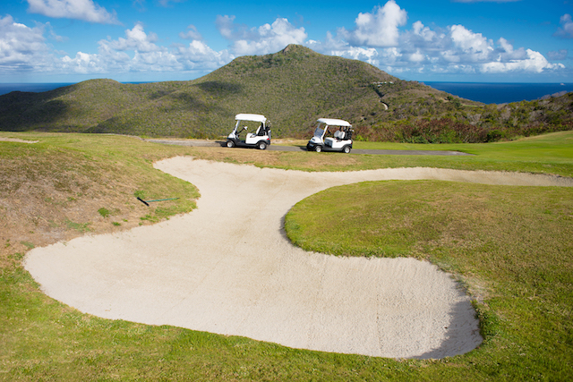
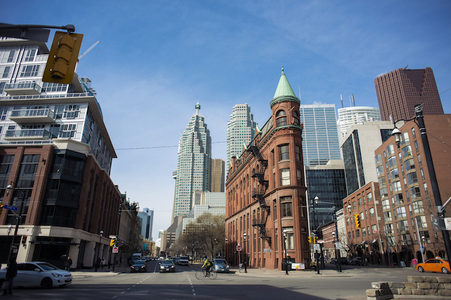

A beautiful island nearby St. Vincent & the Grenadines I had the pleasure of visiting during March, 2015. It is a fairly small island with beaches for bathing and a abundunce of turtles roaming about.
This scene was captured just west of Spadina downtown Toronto looking east. During my earlier years honing my photography skills I had frequented around the area wether window shopping or capturing the diverse selection of people commuting they're daily commute.
A view looking out from over a infinity pool uptop Mount Royal. Many of the properties built in Canouan are catered to those with wealth or the funds to rent such sites for vacation.
Cruising through the mangrooves druing my most recent travelling 2016. Trinidad's mangrooves is home to many of the exotic forestry species and birds looking for retreat from Port of Spains hussle & bussle after a day of scavaging.
A scene I had captured while roaming Canouan's hills, Canouan hosts a number of golf courses which I eventually breaked to have a game of.
View from downtown King Street looking west given a great spur of ligting against the notroius flat iron building.
